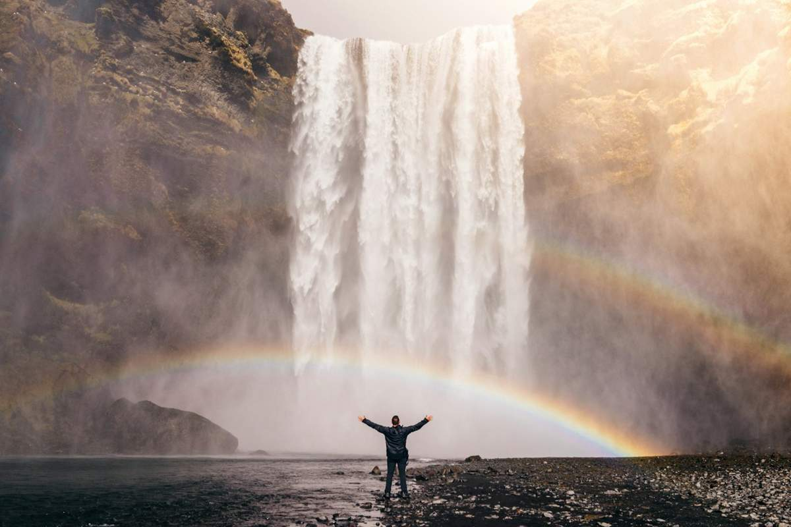

Reykjavík, il punto di partenza
Un primo incontro con la capitale e i suoi dintorni, per entrare nell’atmosfera del viaggio.

CLICK&VIAGGIA / ISLANDA
Cascate, paesaggi vulcanici e orizzonti aperti. Un’idea di viaggio per chi cerca la forza dei luoghi e il piacere di sentirsi lontano dalla routine.
L’ESPERIENZA
In Islanda il paesaggio cambia il modo di guardare. L’acqua, la roccia e gli spazi aperti diventano il filo di un percorso in cui la natura occupa il centro della scena.
Da Reykjavík alla costa meridionale, la proposta invita a esplorare con attenzione, dedicando tempo alle soste e alla scoperta. Stagione, spostamenti e ritmo saranno definiti insieme: perché un viaggio così merita di essere pensato intorno a chi lo vive.
IL FILO DEL VIAGGIO
Questa è una traccia illustrativa: date, servizi e organizzazione saranno definiti prima di confermare il viaggio. Le fotografie raccontano la destinazione e non identificano servizi inclusi.
Un primo incontro con la capitale e i suoi dintorni, per entrare nell’atmosfera del viaggio.
Un percorso sulla costa meridionale, con soste e tappe da adattare alla stagione.
Le giornate finali completano l’esperienza con un programma costruito in base a tempi e interessi.
PARLIAMO DELLA TUA PROSSIMA PARTENZA
Raccontaci cosa cerchi, con chi vorresti partire e quali momenti vuoi vivere.
Un appuntamento con il team è il primo passo per valutare il percorso e le possibilità disponibili.
Un incontro informativo, prima di qualsiasi decisione.